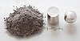

rhodium

Definition: Rhodium is a chemical element with the symbol Rh and atomic number 45. It is a very rare, silvery-white, hard, corrosion-resistant transition metal. It is a noble metal and a member of the platinum group. It has only one naturally occurring isotope: 103Rh. Naturally occurring rhodium is usually found as a free metal or as an alloy with similar metals and rarely as a chemical compound in minerals such as bowieite and rhodplumsite. It is one of the rarest and most valuable precious metals.
Source: Wikipedia
Wikipedia Page
Wikidata Page